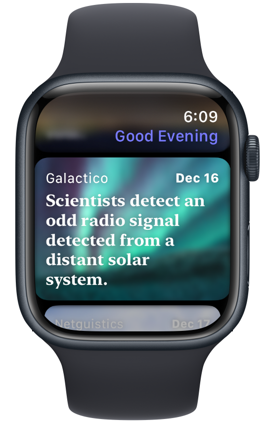

Meet The Brief: the definitive source of news on Apple Watch.
The Brief was created to solve a gaping problem with news apps on watchOS: no one app could browse full articles, access a variety of outlets across the world, and be personalised to your interests - all while being easy to set up.
The Brief is the first app on watchOS to do all these in one product.
- Get articles from a variety of outlets across the world, curated by Bing News, and presented in a beautiful design made for your Watch.
- Open and read full-length articles via MSN, or the outlet's website - depending on region.
- Customise your front page to show articles from a topic* or search term of your choosing, and make searches to dive deeper whenever you want.
- All you need to do to set it up is open the app. There's no need to go around trying to subscribe to a heap of RSS feeds - The Brief does it all for you. That aforementioned customisation is just a tap away in Settings too.
Download The Brief today for one low price, instead of being locked into competitors' subscription services - that can be triple the cost, each month.
* Articles by topic are only available in certain regions. Users from any region can still set their front page to show results for a search term.